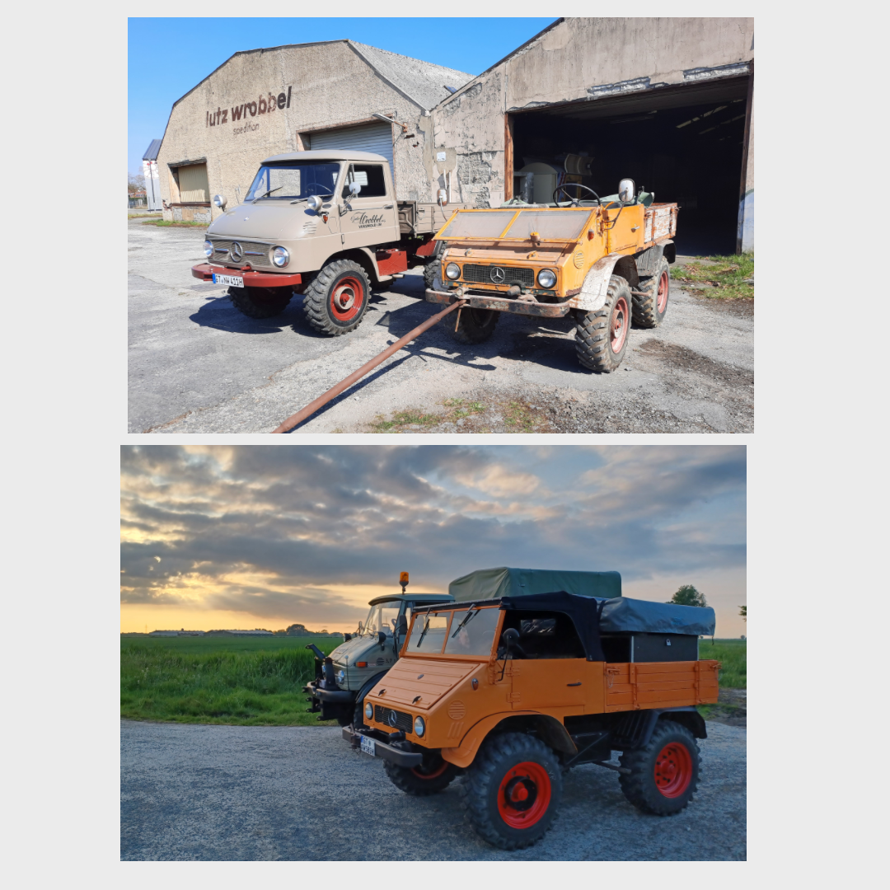

Dieser Unimog 411.110 Cabrio stammt aus dem Baujahr 1958 und ist ein früher Vertreter der beliebten 411er‑Baureihe. Der offene Aufbau macht ihn zu einem besonderen Fahrzeug für Ausfahrten und Treffen, bei denen der historische Charakter des Unimog besonders zur Geltung kommt.
Der Mog befindet sich in einem gepflegten Zustand und wird regelmäßig bei Veranstaltungen der UVC Regionalgruppe Emsland–Osnabrück eingesetzt.
← Zurück zur Übersicht